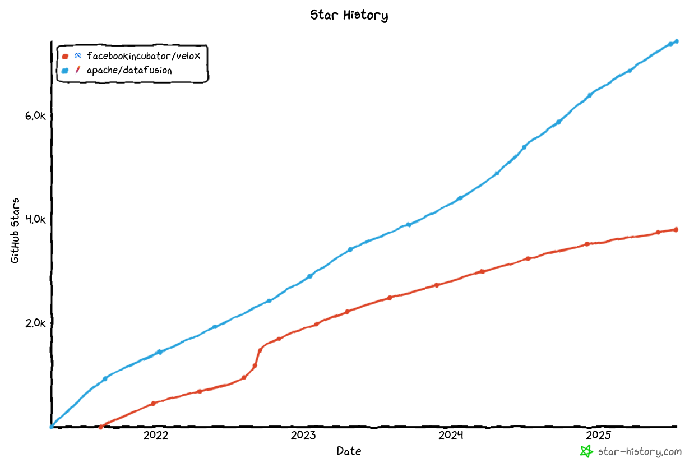
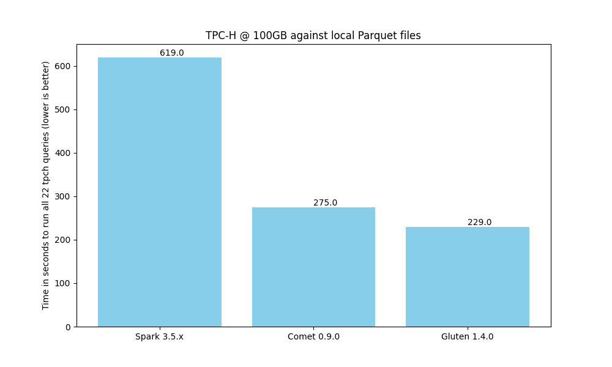

Comparison of Comet and Gluten#
This document provides a comparison of the Comet and Gluten projects to help guide users who are looking to choose between them. This document is likely biased because the Comet community maintains it.
We recommend trying out both Comet and Gluten to see which is the best fit for your needs.
This document is based on Comet 0.9.0 and Gluten 1.4.0.
Architecture#
Comet and Gluten have very similar architectures. Both are Spark plugins that translate Spark physical plans to a serialized representation and pass the serialized plan to native code for execution.
Gluten serializes the plans using the Substrait format and has an extensible architecture that supports execution against multiple engines. Velox and Clickhouse are currently supported, but Velox is more widely used.
Comet serializes the plans in a proprietary Protocol Buffer format. Execution is delegated to Apache DataFusion. Comet does not plan to support multiple engines, but rather focus on a tight integration between Spark and DataFusion.
Underlying Execution Engine: DataFusion vs Velox#
One of the main differences between Comet and Gluten is the choice of native execution engine.
Gluten uses Velox, which is an open-source C++ vectorized query engine created by Meta.
Comet uses Apache DataFusion, which is an open-source vectorized query engine implemented in Rust and is governed by the Apache Software Foundation.
Velox and DataFusion are both mature query engines that are growing in popularity.
From the point of view of the usage of these query engines in Gluten and Comet, the most significant difference is the choice of implementation language (Rust vs C++) and this may be the main factor that users should consider when choosing a solution. For users wishing to implement UDFs in Rust, Comet would likely be a better choice. For users wishing to implement UDFs in C++, Gluten would likely be a better choice.
If users are just interested in speeding up their existing Spark jobs and do not need to implement UDFs in native code, then we suggest benchmarking with both solutions and choosing the fastest one for your use case.

Compatibility#
Comet relies on the full Spark SQL test suite (consisting of more than 24,000 tests) as well its own unit and integration tests to ensure compatibility with Spark. Features that are known to have compatibility differences with Spark are disabled by default, but users can opt in. See the Comet Compatibility Guide for more information.
Gluten also aims to provide compatibility with Spark, and includes a subset of the Spark SQL tests in its own test suite. See the Gluten Compatibility Guide for more information.
Performance#
When running a benchmark derived from TPC-H on a single node against local Parquet files, we see that both Comet and Gluten provide an impressive speedup when compared to Spark. Comet provides a 2.4x speedup compares to a 2.8x speedup with Gluten.
Gluten is currently faster than Comet for this particular benchmark, but we expect to close that gap over time.
Although TPC-H is a good benchmark for operators such as joins and aggregates, it doesn’t necessarily represent real-world queries, especially for ETL use cases. For example, there are no complex types involved and no string manipulation, regular expressions, or other advanced expressions. We recommend running your own benchmarks based on your existing Spark jobs.

The scripts that were used to generate these results can be found here.
Ease of Development & Contributing#
Setting up a local development environment with Comet is generally easier than with Gluten due to Rust’s package management capabilities vs the complexities around installing C++ dependencies.
Summary#
Comet and Gluten are both good solutions for accelerating Spark jobs. We recommend trying both to see which is the best fit for your needs.